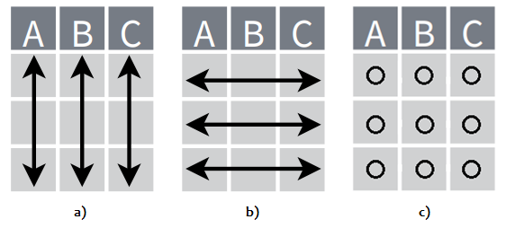

| A | B | C | D |
|---|---|---|---|
| 6 | 7 | 11 | 10 |
| 8 | 9 | 16 | 12 |
| 7 | 10 | 11 | 11 |
| 8 | 8 | 13 | 9 |
Introducción
Para realizar un análisis de un determinado conjunto de datos en su mayoría los encontraremos desordenados por lo que necesita una transformación, este debe cumplir así una estructura determinada respondiendo a nuestras necesidades.
Tidy data
Es una manera de organizar los datos tabulares en una estructura consistente.
Tal conjunto de datos cumple con tres reglas relacionadas entre sí como se muestra a continuación:

Ejemplos
A continuación, trabajaremos con tres conjuntos de datos:
Tabla 3.1 de Gutíerrez Pulido Humberto (2008).
Similar al ejemplo anterior con una ligera diferencia. Tabla 3.2 de Gutíerrez Pulido Humberto (2008).
| Tipo de cuero | Obs 1 | Obs 2 | Obs 3 | Obs 4 | Obs 5 | Obs 6 |
|---|---|---|---|---|---|---|
| A | 264 | 260 | 258 | 241 | 262 | 255 |
| B | 208 | 220 | 216 | 200 | 213 | 206 |
| C | 220 | 263 | 219 | 225 | 230 | 228 |
| D | 217 | 226 | 215 | 227 | 220 | 222 |
Tabla en formato largo.
| Ensayo | Variable | Dosis |
|---|---|---|
| A | Nitrógeno | 88 |
| A | Fósforo | 12 |
| A | Potasio | 22 |
| B | Nitrógeno | 91 |
| B | Fósforo | 17 |
| B | Potasio | 28 |
| C | Nitrógeno | 99 |
| C | Fósforo | 24 |
| C | Potasio | 30 |
| D | Nitrógeno | 94 |
| D | Fósforo | 28 |
| D | Potasio | 31 |
Pivotado
Para realizar el pivotado usaremos dos funciones dentro de la librería tidyr:
pivot_longer()pivot_wider()
Funciones pivote en acción
Tabla 1
Un conjunto de datos amplio que transformaremos a un formato largo.
Code
m_ensamble_l <- m_ensamble_t %>%
tidyr::pivot_longer(cols = 1:4,
names_to = 'Método',
values_to = 'Minutos')| Método | Minutos |
|---|---|
| A | 6 |
| B | 7 |
| C | 11 |
| D | 10 |
| A | 8 |
| B | 9 |
| C | 16 |
| D | 12 |
| A | 7 |
| B | 10 |
| C | 11 |
| D | 11 |
| A | 8 |
| B | 8 |
| C | 13 |
| D | 9 |
Tabla 2
Nota que esta tabla contiene observaciones como variables, un poco diferente al ejemplo anterior, pero no hay inconveniente a la hora de transformar.
Code
tc <- tipos_c %>%
tidyr::pivot_longer(cols = 2:7,
names_to = "Observación",
values_to = "Lectura")| Tipo de cuero | Observación | Lectura |
|---|---|---|
| A | Obs 1 | 264 |
| A | Obs 2 | 260 |
| A | Obs 3 | 258 |
| A | Obs 4 | 241 |
| A | Obs 5 | 262 |
| A | Obs 6 | 255 |
| B | Obs 1 | 208 |
| B | Obs 2 | 220 |
| B | Obs 3 | 216 |
| B | Obs 4 | 200 |
| B | Obs 5 | 213 |
| B | Obs 6 | 206 |
| C | Obs 1 | 220 |
| C | Obs 2 | 263 |
| C | Obs 3 | 219 |
| C | Obs 4 | 225 |
| C | Obs 5 | 230 |
| C | Obs 6 | 228 |
| D | Obs 1 | 217 |
| D | Obs 2 | 226 |
| D | Obs 3 | 215 |
| D | Obs 4 | 227 |
| D | Obs 5 | 220 |
| D | Obs 6 | 222 |
Tabla 3
Por último, nos encontramos con redundancia en los datos como ocurre en la columna variable la cual deseo convertir en variables.
Code
fert_t <- tidyr::pivot_wider(fert, names_from = "Variable",
values_from = "Dosis")| Ensayo | Nitrógeno | Fósforo | Potasio |
|---|---|---|---|
| A | 88 | 12 | 22 |
| B | 91 | 17 | 28 |
| C | 99 | 24 | 30 |
| D | 94 | 28 | 31 |
Explicación
pivot_longer()colsselecciona el número de variables presentes en columnas y que pasarán a una sola.names_toes el nombre de la nueva columna que contiene las variables.values_toel nombre a elegir que mostrará los valores presentes del conjunto de datos.pivot_wider()names_fromhace referencia a la columna Variable pasando a ser una columna.values_fromlos valores de dosis de fertilizante para cada variable (columna).
Conclusiones
Las funciones presentadas aquí nos facilitan transformar nuestros datos una vez que distinguimos de manera clara entre variables, observaciones y valores. Tal ordenamiento puede ser interpretado sin problema por la computadora, ahora están listos para un documento o un análisis estadístico.
Referencias
Gutíerrez Pulido Humberto, De la Vara Salazar Román. 2008. Análisis y Diseño de Experimentos. Segunda edición. México: McGraw Hill Interamericana.
Reuse
Citation
BibTeX citation:
@online{avila-martínez2022,
author = {Gerardo Avila-Martínez},
title = {Transformación de Datos Con Tidyr},
date = {2022-11-13},
langid = {en}
}
For attribution, please cite this work as:
Gerardo Avila-Martínez. 2022. “Transformación de Datos Con
Tidyr.” November 13, 2022.